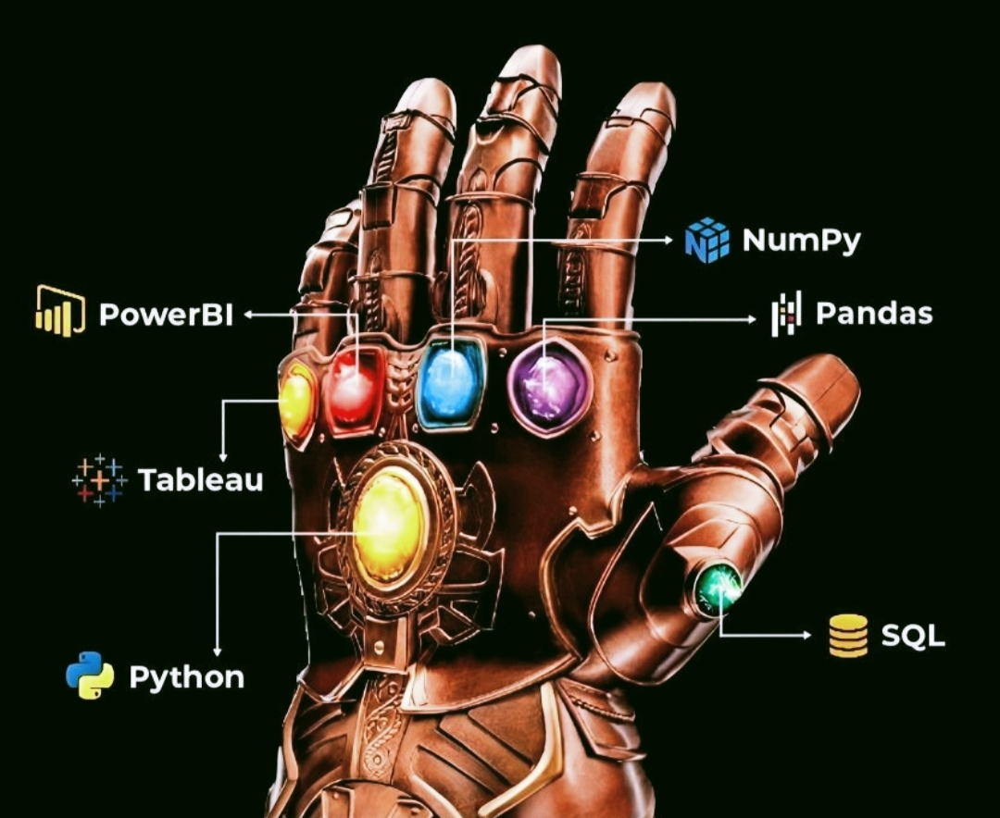

As a data analyst, your tools are your ultimate weapons in the battle against data. Making the right choices is key to victory. Here are some of the most powerful tools that every data analyst should master:

1. Python: The Data Wizard's Wand
Picture Python as a wizard’s wand in the hands of a data sorcerer. This versatile programming language is your go-to for conjuring data manipulation, analysis, and visualization spells...
2. SQL: The Key to the Data Kingdom
SQL is the key to unlocking the treasures hidden within relational databases...
3. Power BI: The Data Storyteller's Canvas
Microsoft Power BI transforms raw data into compelling stories...
4. Tableau: The Data Artist's Palette
Tableau is the palette of a data artist, offering a rich array of tools to create visualizations...
5. NumPy: The Numerical Powerhouse
NumPy is the powerhouse of numerical computing in Python...
6. Pandas: The Data Whisperer
Pandas is the data whisperer, taming wild datasets and transforming them into structured, insightful forms...
Conclusion
Choosing the right combination of these tools can significantly enhance your ability to extract insights...